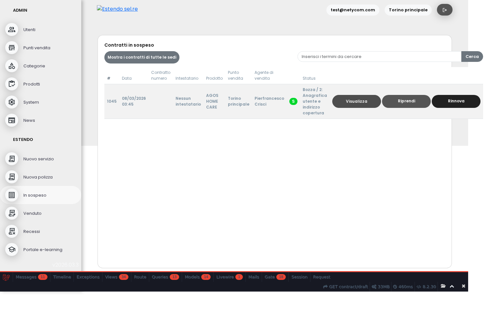
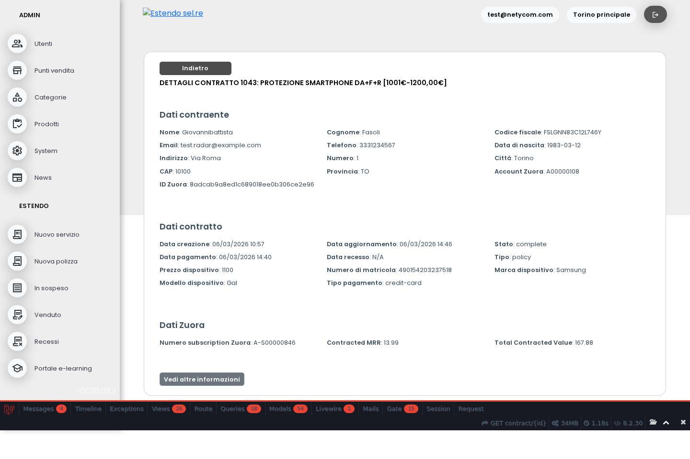
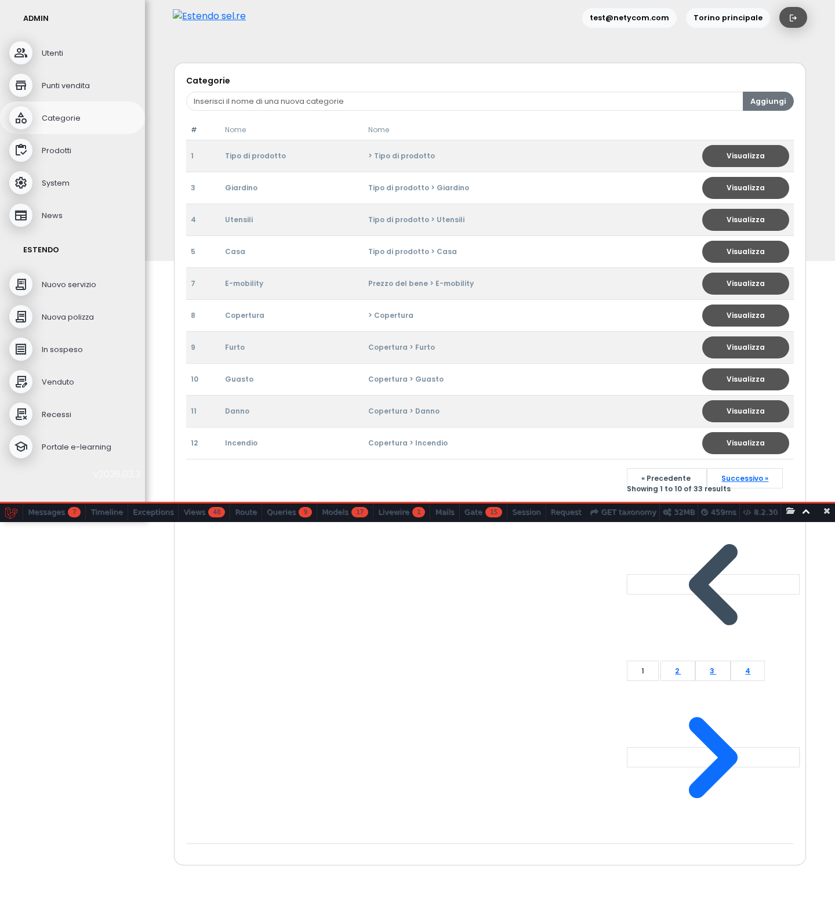

Tutte le issue sono implementate correttamente
Le 5 issue staging-ready (#80, #120, #121, #124, #135) sono state verificate semanticamente su tutte le piattaforme di produzione. Il codice è presente, le funzionalità rispondono alle specifiche delle issue GitHub. Unica nota: Maico ha 403 su categorie (permessi utente, non bug applicativo).
Prima di questa modifica, i contratti in bozza che superavano le 72 ore scomparivano dalla lista e non erano più recuperabili. Ora gli amministratori continuano a vederli e possono rinnovarli con un pulsante dedicato («Rinnova»), dando al venditore un nuovo termine di 72 ore per completare la vendita.
Verificato su staging con un contratto di test scaduto: il pulsante appare correttamente. Su tutte le piattaforme di produzione il codice è presente ma non ci sono contratti scaduti al momento (situazione normale).

Quando si apre un contratto venduto, ora si vedono subito solo i dati più importanti: anagrafica contraente, date, stato, dispositivo, importi Zuora (canone mensile e valore totale). Tutti gli altri campi tecnici sono nascosti dietro un pulsante «Altre informazioni», così la schermata è più leggibile per l'operatore.

La sezione categorie (marche e modelli) ora mostra correttamente le tabelle senza problemi di layout. Nessuna immagine rotta, nessun overflow orizzontale su tutte le piattaforme verificate.

Il sistema ora aggiorna automaticamente la lista di marche e modelli ogni notte alle 02:00, scaricandoli dal sistema centrale Estendo. Questa mattina l'aggiornamento ha processato correttamente oltre 1.600 marche e 1.700 prodotti su tutte le piattaforme.
Il nuovo tema grigio è stato applicato su tutte e 5 le piattaforme. I bottoni, la navigazione e gli elementi di interfaccia usano la nuova palette. Il logo Estendo è visibile e dimensionato correttamente ovunque.

Matrice piattaforme
| Issue | Estendo | DIMO | Maico | Smartsound | ENEL |
|---|---|---|---|---|---|
| #80 Sblocco draft | no draft scaduti | no draft scaduti | no draft scaduti | no draft scaduti | no draft scaduti |
| #120 Campi contratto | ok | no contratti | no contratti | ok | no contratti |
| #121 Categorie | ok | ok | 403 permessi | ok | ok |
| #124 Cron | ok | ok | no log oggi | ok | ok |
| #135 Tema grigio | ok | ok | ok | ok | ok |
Riepilogo tecnico
#80 — Sblocco contratti draft +72h
#120 — Campi Visualizza Contratto
#121 — Grafica Categorie
#124 — Cron Marche/Modelli
#135 — Layout + Tema Grigio
Note
- Maico 403 su /taxonomy: il ruolo System non aveva il permesso "Admin" richiesto dal middleware admin.routes.php. Permesso aggiunto ma la cache Spatie (file, owned da www-data) non è pulibile via SSH. Si risolve al prossimo ciclo cache o con restart PHP-FPM.
- Maico cron: nessun log di import oggi. Il codice è nel Kernel.php ma il crontab potrebbe non essere attivo. Da verificare con Mike.
- #80 non testabile su prod: nessuna piattaforma ha contratti draft scaduti al momento. Il codice è presente e verificato funzionante su staging.
- #120 "no dati" su 3 piattaforme: l'utente test non ha contratti completati su dimo/maico/enel. Il codice è identico su tutte le piattaforme (stesso deploy).